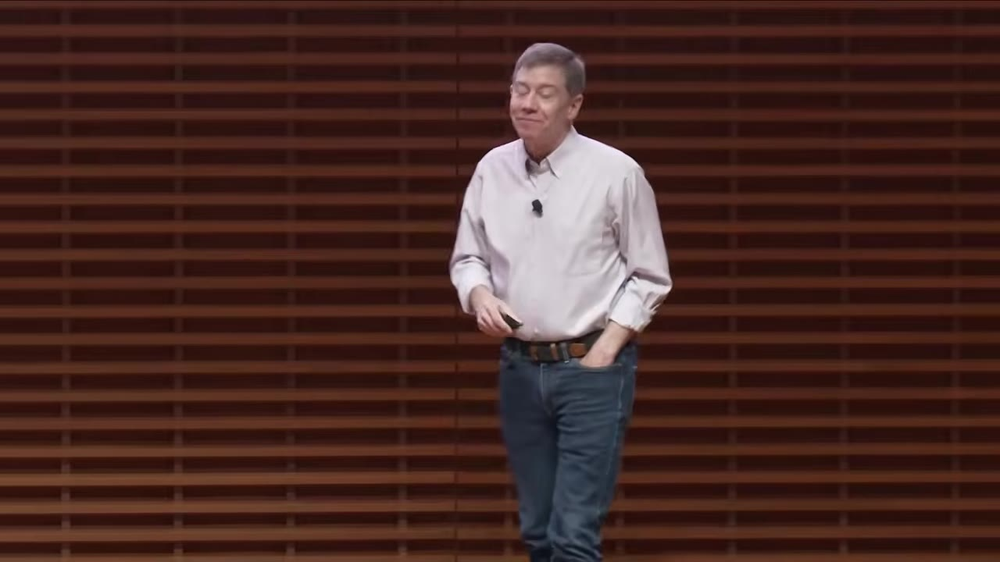
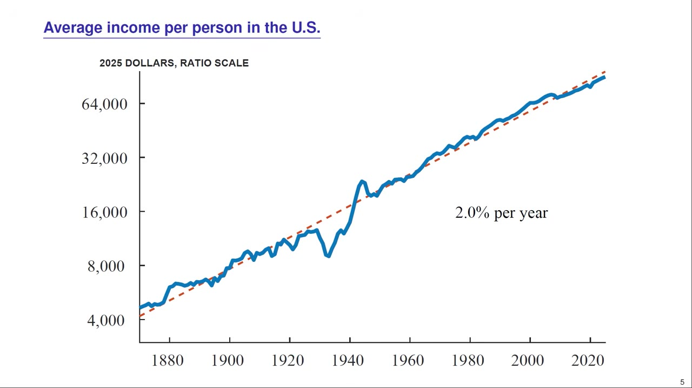
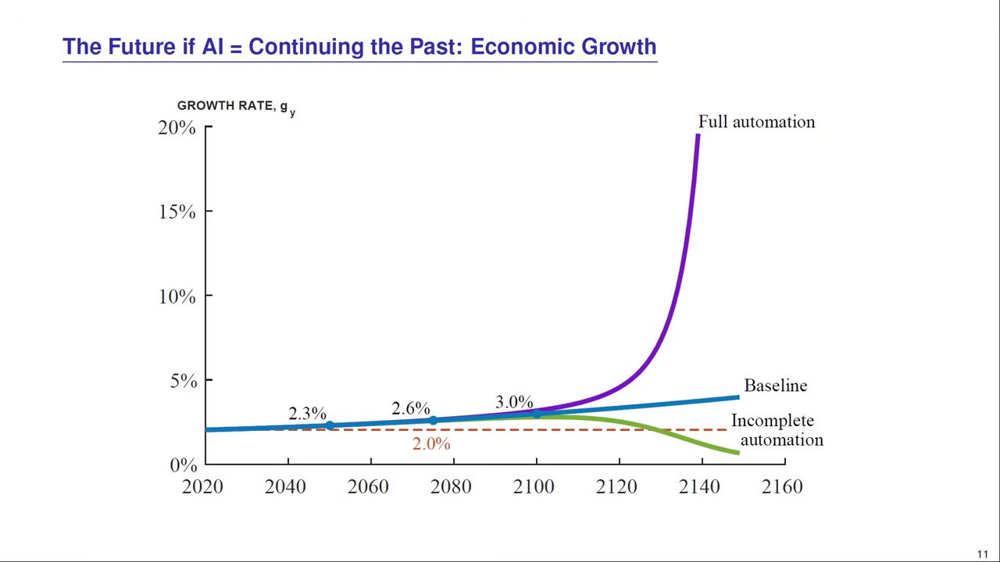
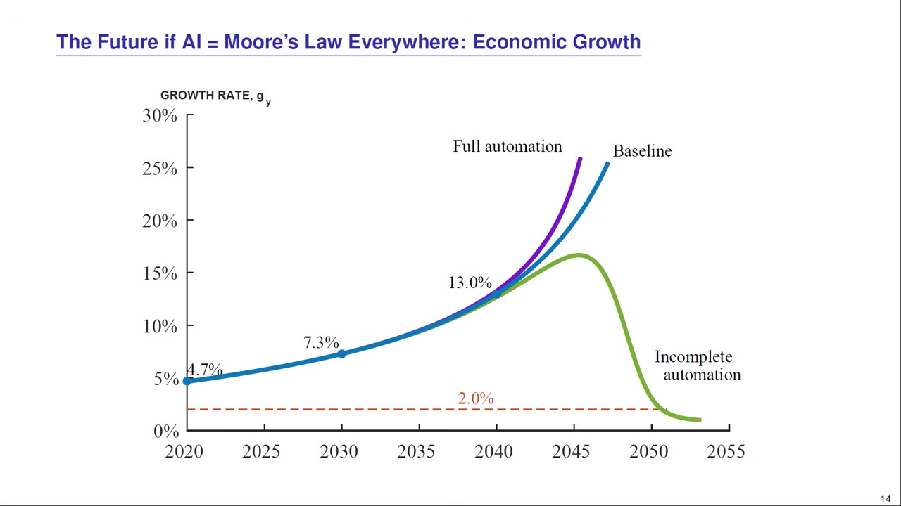
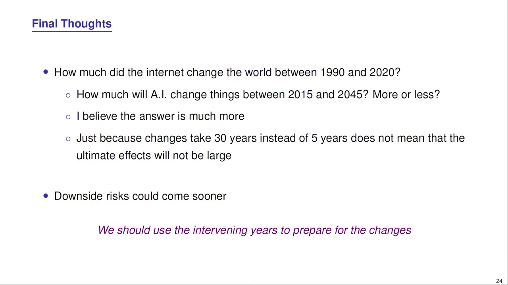

A Stanford economist models whether AI will dramatically accelerate economic growth or continue the 150-year trend of steady 2% annual growth — and why the answer depends on "weak links.
Watch on YouTubeProfessor Chad Jones, a Stanford economist who has spent 15+ years studying economic growth, frames his talk around a fundamental question: what if AI can perform every task a human can do? He presents two extreme scenarios and then a "weak links" framework to locate where the truth probably lies between them.

The first scenario is the one Silicon Valley most excited about: AI triggers a self-reinforcing flywheel. AI automates software engineering → AI researchers build better algorithms → virtual remote workers scale to millions of GPUs → billions of AI assistants discover new ideas → robots automate physical tasks → growth explodes.
This is plausible. Dario Amodei, Sam Altman, Demis Hassabis, and Geoff Hinton have been saying for a decade that these things are coming. The first stage — AI automating software engineering — is already underway.
The second scenario: AI is just the latest in a line of transformative technologies — electricity, transistors, IT, the internet — that transformed living standards but never bent the growth curve.

Each new technology (steam → electricity → internal combustion → semiconductors → IT → internet) prevented growth from slowing, letting the 2% line continue for another 50 years. The pessimistic take: AI might be the latest technology that lets 2% growth continue for another 50.
Jones' key insight: a chain is only as strong as its weakest link. Business success requires completing many tasks successfully — if any one fails, the whole thing falls apart. This has a critical implication for AI.
Even if you automate one task perfectly, the other weak links bottleneck you. Infinite amounts of any single task raises GDP by only that task's share of GDP — software is ~2% of GDP, so infinite software would make us only 2% richer. You have to keep automating the weak links, and that takes a long time.
Weak links are also the source of scarcity — what is the scarce factor determines who gets paid. When computers became plentiful, their share of GDP fell from 4.5% to 3% despite having 100 million times more transistors.
Jones' model features ideas as the source of growth (à la Paul Romer), with weak links in both goods and idea production. Calibrated to U.S. data back to the 1950s, the simulations show:

In the baseline scenario, growth accelerates from 2% but settles at 50% per year over centuries — by 2050, we're growing at 2.3% (4% richer than we would have been). In the aggressive Moore's Law everywhere scenario, growth hits 25%+ by 2050, but the full explosion still takes 30 years.
What if AI is different — not just a continuation of historical automation, but a break with the past? Jones runs an aggressive scenario: the entire economy gets automated at Moore's Law rates (10%/year instead of the historical 3%).

By 2050, the economy grows at 25%+ per year. But crucially: even in this extreme case, the explosion takes 30 years to complete. Weak links are doing their work.
Jones ends with a sobering observation: the weak links framework means the system is slow to improve but fragile on the downside. A single broken link destroys all value.
